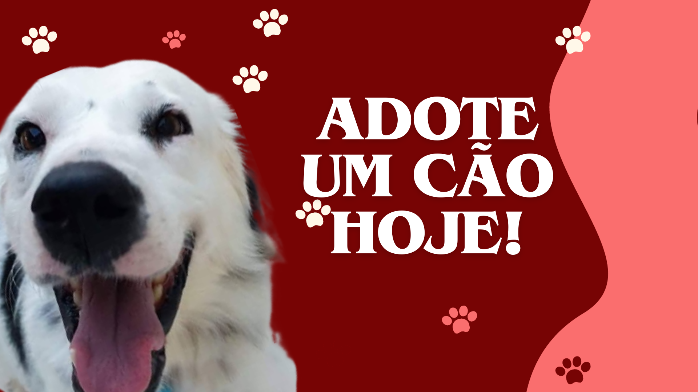
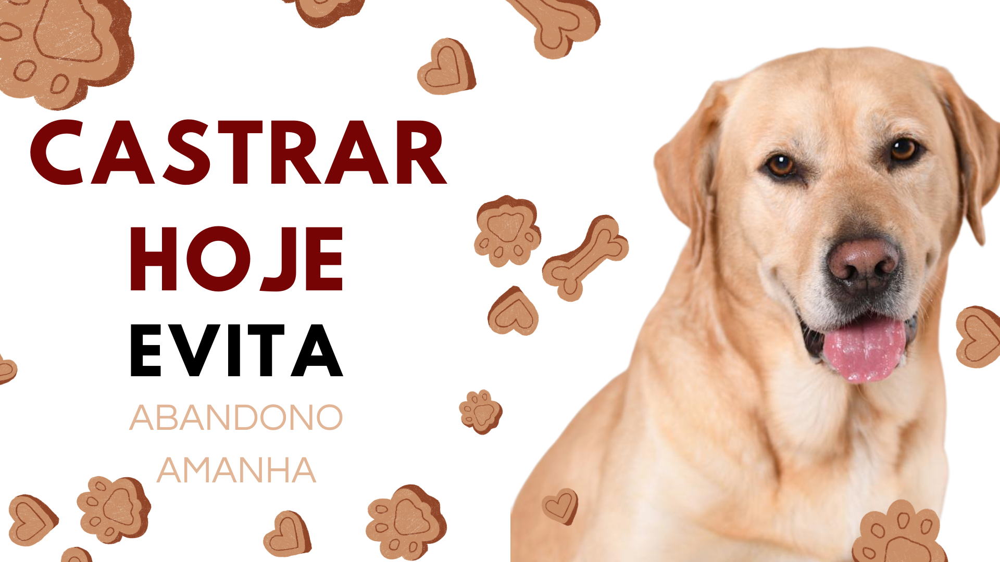

Este é o espaço virtual do Projeto Salvamento Riopas, pelo qual você poderá conhecer um pouco sobre ele e sobre o trabalho que realizamos com os animais de rua de Rio Pardo de Minas. Por aqui, nosso objetivo é conectar as pessoas que possuem compaixão com esses indefesos, e tentar repassar a importância e o amor que devemos ter com eles. Aqui você irá conhecer alguns dos vários animais que estão disponiveis para adoção, conhecer alguma das nossas tarefas e como você pode estar ajudando, seja com doações, se voluntariando e até mesmo adotando um desses amiguinhos tão dóceis!
Na frente de sua casa ou prédio, deixe um potinho de água e ração para os animais que vivem na região
Ao avistar um bichinho na rua, que aparenta ter dono, converse com as pessoas próximas e procure se informar se aquele animal está por ali há muito tempo, ou se eles saberiam dizer de onde ele veio, se teria alguém da região procurando por algum bichinho. E ainda que tudo isso não bastar , tire fotos e compartilhe colocando a localização, pois caso ele relamente tenha dono o mesmo pode acabar visualizando a sua postagem e ir ao encontro do animal.
Leve consigo uma sacola dentro de sua bolsa ou mochila com ração, pois se acaso no seu dia a dia você se encontrar com um bichinho de rua você poderá oferecer comida ou água ele, aliviando sua fome. Recomendamos que sempre carregue e utilize uma ração para gatos para que assim, tanto os gatinhos quanto os cachorrinhos poderão comer sem problemas.
🐕S.O.S ANIMAIS! "Quatro patas, você também é responsável!"❤🐈